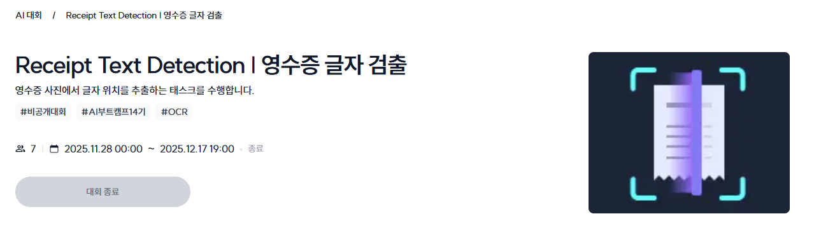

커널 아카데미 AI Lab #012 127–142일차 OCR(Optical Character Recognition) 경진대회
2025.12.31.(TUE)
OCR(Optical Character Recognition)
127일차부터 142일차까지는 이번 패스트캠퍼스 AI 부트캠프 과정에서 마지막으로 진행하는 경진대회인 OCR 경진대회가 진행됐다. 이번 대회는 모든 교육생들이 하나의 대회에 참여하는 형식이 아닌, 서로 다른 3가지 주제의 대회 중 원하는 것을 선택해서 참여하는 형식이었다. 내가 참여했던 OCR 외의 대회 주제는 각각 AD(Anomaly Detection), RecSys(Recommendation System)이었다.
대회 소개
대회 내용은 주어진 영수증 이미지에서 글자의 위치와 그 내용을 추출하는 작업을 수행하는 모델을 구현하는 것이었다.
대회 내용
모델 학습 부분은 거의 건드리지 못 했고, 전처리와 증강에 집중하여 Geometric Warp, Lighting Noise, Artifacts(Watermark/Crease), Restorarion(Shadow fix) 작업을 수행하고 증강 데이터를 생성했다.
대회 결과
이번 대회는 앞서 언급했듯 각자가 원하는 주제를 선택하여 참여하는 형식이었고, 각 대회 참가자들은 모두 한 팀으로 묶였기에 따로 순위 경쟁은 진행되지 않았다.